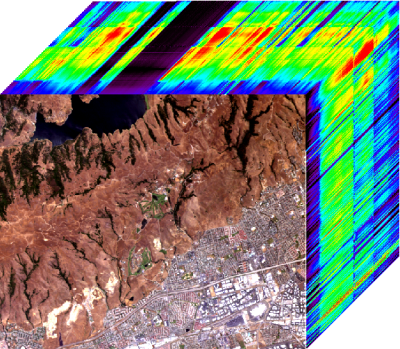

LMM-based unsupervised Bayesian algorithms for spectral mixture analysis
We propose a Bayesian algorithm that can be used to conduct unsupervised linear spectral mixture analysis (LSMA).
Each observed vector (e.g., hyperspectral pixel or measured spectrum) is decomposed as a linear combination of pure spectra (e.g., endmembers) following the linear mixing model. This model accounts for standard non-negativity and full-additivity (sum-to-one) constraints on the mixing coefficients and non-negativity constraints on the spectral signatures. The central premise of this paper is to propose an algorithm that estimates the spectra and their respective proportions jointly in a single step. This approach casts LSMA as a blind source separation (BSS) problem. The proposed joint LSMA approach is able to solve the spectrum estimation problem directly on a lower dimensional space. Indeed, we propose to estimate the projections of the spectra in an appropriate subspace.
The abundance estimation procedure and the main results are detailed in a paper published in IEEE Trans. Signal Processing in 2009.
- article
 [ .pdf - 1.3Mo ].
[ .pdf - 1.3Mo ].
The corresponding Matlab codes are available below.
- matlab codes
 [ .tar - 110Ko ].
[ .tar - 110Ko ].
New! A beta version of a Matlab GUI for the Bayesian Linear Unmixing (BLU) algorithm:
- Matlab GUI BLU code [ .zip - 2.2Mo ]
Application to hyperspectral imagery : synthetic data
To illustrate the accuracy of the proposed algorithm, simulations are conducted on a 100x100 synthetic
image. This hyperspectral image is composed of three different regions with R = 3 pure materials
representative of a suburban scene: construction concrete, green grass and red brick. The spectra of
these endmembers are represented in Fig. 1 (top, black lines). The reflectances are observed in L = 413 spectral
bands.
Fig. 1. Actual endmembers (black lines), endmembers estimated by N-FINDR (blue lines), endmembers estimated by VCA
(green lines) and endmembers estimated by proposed approach (red lines).
These R = 3 components have been mixed with proportions that have been randomly generated over the simplex defined by the constraints.
The generated abundance maps have been depicted in Fig. 2 (top) in gray scale where
a white (resp. black) pixel stands for the presence (resp. absence) of the material. The signal-to-noise
ratio has been tuned to SNR = 15dB.
Fig. 2. Top: actual endmember abundance maps. Bottom: estimated endmember abundance maps.
Application to hyperspectral imagery : real data
The picture above (Fig. 3) was acquired in 1997 over Moffett Field (CA, USA) by the Airborne Visible Infrared Imaging Spectrometer AVIRIS of the JPL laboratory (NASA).

Fig. 3. Hyperspectral image acquired over Moffett Field (CA, USA). The top of the cube represents the observed scene shown in true colors.
The R = 3 endmembers recovered by the proposed joint Bayesian LSMA algorithm
are depicted in Fig. 4 (top). These endmember spectra are represented in L = 189 spectral bands after
removing the water absorption bands4. These endmembers are characteristic of the coastal area that
appears in the image: vegetation, water and soil.
Fig. 4. Top: the R = 3 endmember spectra estimated by the algorithm in the Moffett Field scene. Bottom: the corresponding
abundance maps (black (respectively, white) means absence (respectively, presence) of the material).